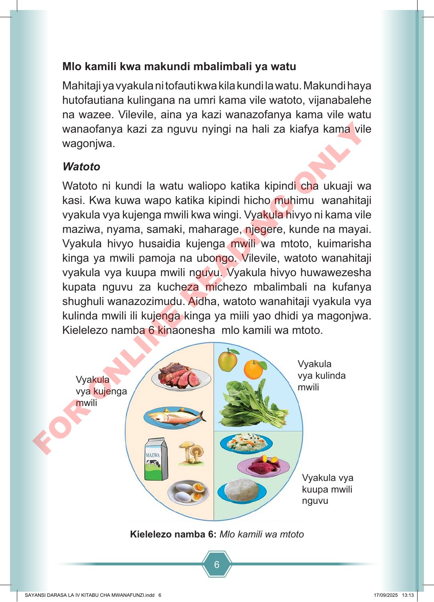

6 Mlo kamili kwa makundi mbalimbali ya watu Mahitaji ya vyakula ni tofauti kwa kila kundi la watu. Makundi haya hutofautiana kulingana na umri kama vile watoto, vijanabalehe na wazee. Vilevile, aina ya kazi wanazofanya kama vile watu wanaofanya kazi za nguvu nyingi na hali za kiafya kama vile wagonjwa. Watoto Watoto ni kundi la watu waliopo katika kipindi cha ukuaji wa kasi. Kwa kuwa wapo katika kipindi hicho muhimu wanahitaji vyakula vya kujenga mwili kwa wingi. Vyakula hivyo ni kama vile maziwa, nyama, samaki, maharage, njegere, kunde na mayai. Vyakula hivyo husaidia kujenga mwili wa mtoto, kuimarisha kinga ya mwili pamoja na ubongo. Vilevile, watoto wanahitaji vyakula vya kuupa mwili nguvu. Vyakula hivyo huwawezesha kupata nguvu za kucheza michezo mbalimbali na kufanya shughuli wanazozimudu. Aidha, watoto wanahitaji vyakula vya kulinda mwili ili kujenga kinga ya miili yao dhidi ya magonjwa. Kielelezo namba 6 kinaonesha mlo kamili wa mtoto. Vyakula vya kulinda mwili Vyakula vya kuupa mwili nguvu Vyakula vya kujenga mwili Kielelezo namba 6: Mlo kamili wa mtoto SAYANSI DARASA LA IV KITABU CHA MWANAFUNZI.indd 6 SAYANSI DARASA LA IV KITABU CHA MWANAFUNZI.indd 6 17/09/2025 13:13 17/09/2025 13:13 F O R O N L I N E R E A D I N G O N L Y